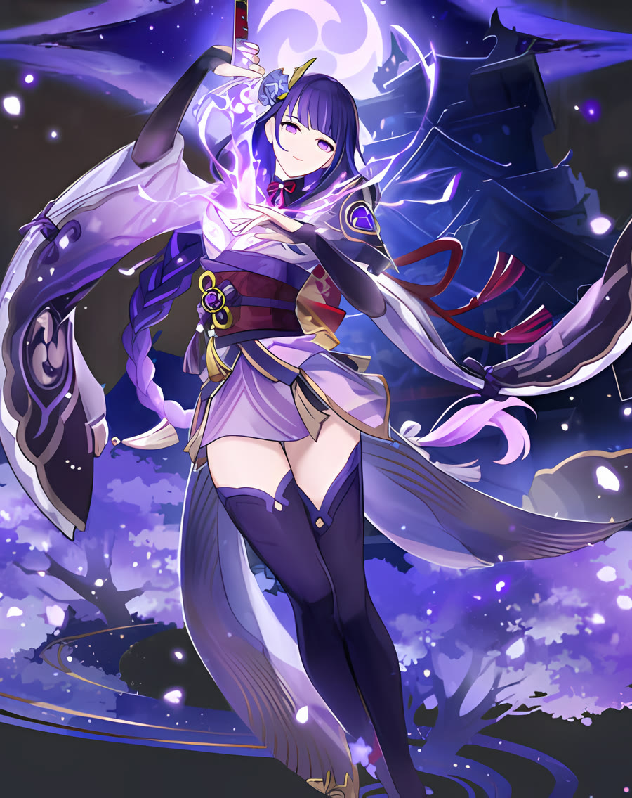

永遠
雷の神が治める島国・稲妻。将軍は、国を時の流れから守ることを己の使命とした。
0%
Inazuma ・ The Eternal
Scroll
第一章
移ろうものは、いつか失われる。
だから彼女は、変わらぬ国を望んだ。
第二章
意識の奥にひらく、静かな世界。
刀を磨き、ただひとり時を見つめる。
第三章
天を裂き、雲を断つ。
稲妻の名は、その一閃から生まれた。
第四章
永遠は、止まることではない。
人と共に、歩みつづけること。
Story
雷の神が治める島国・稲妻。将軍は、国を時の流れから守ることを己の使命とした。
心の内に築いた静かな世界で、本体は長い瞑想を続けている。外の世は、作り上げた人形が預かる。
その一振りは山を割り、大地に深い傷を刻んだと語り継がれる。武の頂に立つ者の証。
旅人との出会いを経て、変わらぬことだけが永遠ではないと知る。国は再び動きはじめる。

Profile
★★★★★
稲妻を統べる雷神。民からは「将軍様」と呼ばれ、厳かな威厳と、どこか浮世離れした佇まいをあわせ持つ。 甘いものには目がない、という意外な一面も。
Combat
通常攻撃
長柄武器による最大5段の連撃。重撃では力を溜め、一気に突き上げる。
元素スキル
雷の眼をひらき、周りの敵に雷ダメージ。仲間の元素爆発を強め、攻撃に合わせて追撃する。
元素爆発
「無想の一太刀」で前方を断ち、しばらく刀で戦う。溜めた「願力」が多いほど威力が増す。
変わらぬものを、
永遠と呼ぶのか。
Is eternity what never changes?